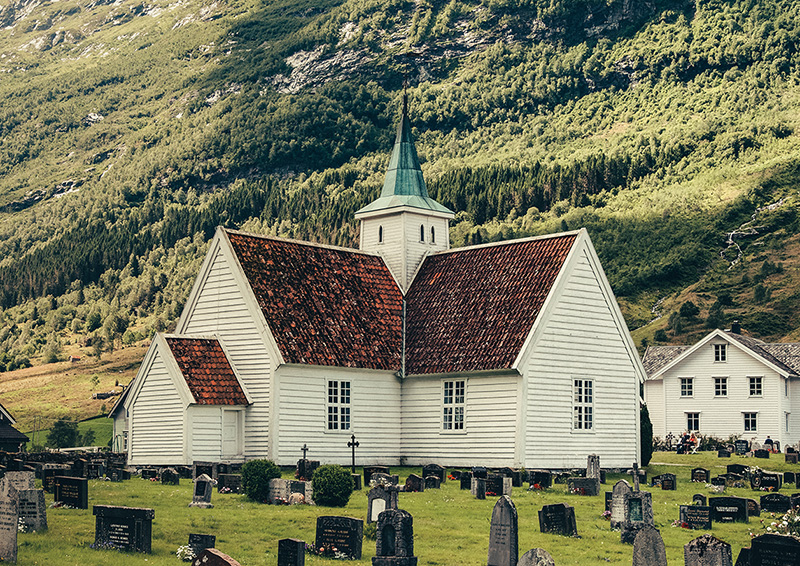

OUR MISSION AND BELIEFS
ABOUT GOD:
There is one God who is creator and maker of the universe. He exists eternally in three persons: The Father, The Son, and The Holy Spirit, who are one in essence and equal in power and glory. Deuteronomy 6:4-5; John 17:21; Ephesians 4:6
ABOUT JESUS CHRIST:
God has revealed Himself to man in the person of Jesus Christ. He is fully God and fully man, the eternal and only begotten Son of God, conceived of the Holy Spirit, born of a virgin, sinless in His life, making atonement for our sins by His death on the cross and vindicated by God in His bodily resurrection, ascended to heaven to sit at God's right hand as our Intercessor and as our Advocate. Hebrews 1:8; 1 Timothy 2:5, 6
ABOUT THE HOLY SPIRIT:
God is present in the world today in the person of the Holy Spirit who draws us to faith in Jesus and who bears witness with our spirit that we are children of God. He indwells the believer which empowers him to manifest the likeness and character of Christ. He gives spiritual gifts to the church for our mutual edification. John 16:7-15; Romans 8:16; Ephesians 4:7; 1 Corinthians 12:7
ABOUT THE BIBLE:
The Bible is the inspired Word of God, His revealed truth and is the infallible guide for our lives. 2 Peter 1:20, 21; 2 Timothy 3:16-17
ABOUT MANKIND:
Man was created by God in His image, free as to choice and responsible to his Creator. Tempted by Satan, he separated himself from God by voluntary disobedience. As a consequence all men are born with a sinful nature and have need of reconciliation with God. Genesis 1:26, 27; Romans 3:10, 23
ABOUT SALVATION:
Man can be saved from the consequence of sin, which is eternal death, by the grace of God through faith in Jesus Christ and in repentance of sin. Man cannot earn nor work for his salvation. When one is saved he is said to be "born again" by the indwelling presence of the Holy Spirit. John 1:11, 12; Ephesians 2:8, 9; 2 Peter 3:9
ABOUT BAPTISM
Water baptism is by immersion and an act of obedient faith. Immersion is a picture of the death, burial, and resurrection of Christ as well as a picture of the new birth. 1 Peter 3:21; Romans 6:1-5; Acts 2:38
ABOUT THE CHURCH:
Man is baptized by the Holy Spirit into the body of Christ which is the church. The church has the mission of carrying on the work of Christ on earth. 1 Corinthians 12:13; Ephesians 2:11-21; Matthew 16:18; Acts 1:8
ABOUT THE LORD'S SUPPER:
The Lord's Supper should be observed to remember Christ and His death for our sins, as well as His coming again for our glorification. 1 Corinthians 11:23-34
ABOUT CHRIST’S SECOND COMING:
The Lord will come again for both salvation and judgment. Acts 1:9-11; Matthew 24:30
ABOUT ETERNITY:
People were created to live forever. One will either exist eternally separated from God in a place called hell, or through faith in Christ, will be eternally united with Him in heaven. Revelation 20:11-15; John 3:16; Matthew 25:41-46
CCV IS A CHURCH COMMITTED TO SEEING A FULLY-DEVOTED FOLLOWER OF JESUS IN EVERY HOME IN THE SAN GABRIEL VALLEY AND BEYOND.
